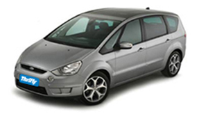

Автомобили в Израиле
Здесь вы найдете немного информации о том какие машины
есть у нас в прокате и просто общую и полезную информацию при аренде
автомобиля

Миниваны 9 мест
Миниваны 8 пассажиров + водитель
Мы входим в пятерку ведущих компаний в Израиле по прокату 9 местных машин (8 пассажиров +
водитель), у нас эти автомобили представлены категорией Z(от 131$/в день
- Заказать) которая включает в себя такие автомобили как VW
Transporter, Citroen Jumpy, Hyundai i800 и другие, все автомобили с
автоматической коробкой передач
особо выгодное предложение - 2120$ за месяц аренды(обязательные страховки включены в цену)
и более дешевой ручной (от 94$/в день - Заказать) категорией
Y которая включает в себя такие автомобили как Renault Traffic, Hyundai
i800 и другие, все автомобили с ручной коробкой передач
особо выгодное предложение - 1600$ за месяц аренды(обязательные страховки включены в цену)

Миниваны 8 мест
Миниваны 7 пассажиров + водитель
Более распространненая категория это 8 местные машины (7 пассажиров +
водитель) у нас эти автомобили представлены эксклюзивной категорией V8(от 120$/в
день - Заказать) которая включает в себя такие автомобили как Toyota
Sienna LE, Kia Carnival и другие, все автомобили с автоматической коробкой
передач
особо выгодное предложение - 1870$ за месяц аренды(обязательные страховки включены в цену)
или более дешевой (от 104$/в день - Заказать) категорией
S которая включает в себя такие автомобили как Hyundai i800 и другие, все
автомобили с ручной коробкой передач
особо выгодное предложение - 1760$ за месяц аренды(обязательные страховки включены в цену)

Миниваны 7 мест
Миниваны 6 пассажиров + водитель
У нас эти автомобили представлены полногабаритной 7-местной категорией V(от 77$/в день
- Заказать) которая включает в себя такие автомобили как Ford
Galaxy, Ssangyong Rodius, Kia Sorento, Seat Alambra, Mitsubishi Outlander
и другие,
особо выгодное предложение - 1550$ за месяц аренды(обязательные страховки включены в цену)
или более дешевой (от 60$/в день
- Заказать) но менее просторной категорией U которая включает в себя
такие автомобили как Mazda 5, Nissan Kashkay и другие, все автомобили с
автоматической коробкой передач
особо выгодное предложение - 1220$ за месяц аренды(обязательные страховки включены в цену)
* Указанные цены соответствуют прейскуранту дилера компании ТРИФТИ для низкого сезона и значительно отличаются от расценок на сайте\отделении поставщика
* Указанные цены ВКЛЮЧАЮТ обязательные страховки
* Указанные цены не включают НДС(только для лиц с Израильским гражданством)
Часы работы отделений - аэропорт Бен Гурион 24\7, остальные отделения 8-18, пятница 8-13
Минимальный возраст водителя 21 год. Водитель 21-23 года - дополнительная оплата "молодой водитель" - 10$ в день
Модели автомобилей представлены исключительно для примера и при выдаче компания имеет право предоставить автомобиль того же класса, но другой марки.
Компания поставщик может изменить цены и конечной считается цена в ваучере.